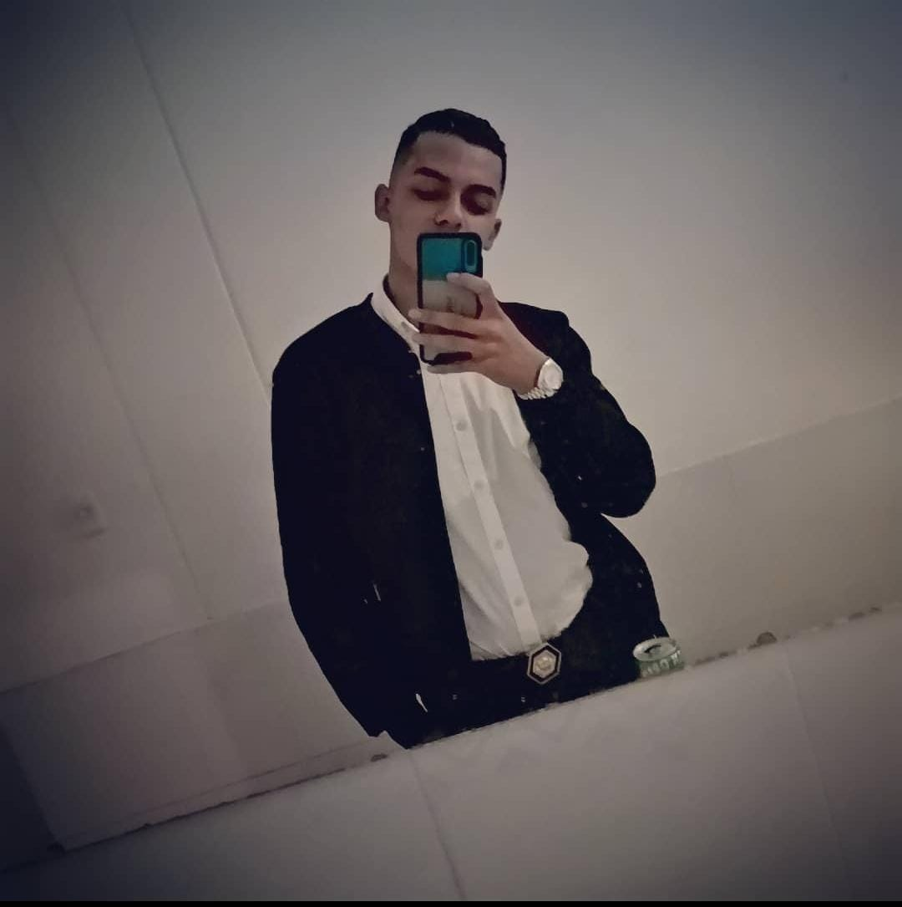

Informacion personal

Mi nombre es Jaider Ivan Vera Jaimes, soy un desarrollador web y movil colombiano,
durante los ultimos 3 años me he adentro en el mundo de la programacion, Actualmente posee titulos
como Tecnico en sistemas y Tecnologo en gestion de redes y sistemas
teleinformaticos.
Principalmente en el ultimo año he adquirido experticia en el ambito de la creacion de paginas web y
sistemas de informacion,
ademas, he adquirido conocimientos en el area de desarrollo movil, con el SDK Flutter, para la
creacion de interfaces de usuario para aplicaciones
en Android, iOS y Web.
Ademas, domino el idioma el español siendo mi lenguaje materna y el ingles con un nivel B1,
el cual quiero aumentar hasta llegar a un nivel de compresion, escritura y lectura superior.
Conocimientos
Desarrollo movil
lenguajes de programacion
Frameworks
- Laravel 8
- Codeignater
- Django
Bases de datos
Repositorio
Proyectos
- E-commerce mayoristas: Este proyecto lo desarrolle para la empresa
PERA, con el fin facilitar la forma en que los grandes distribuidores
de dicha marca solicitaban sus pedidos, la tecnología que aplicada fue: Laravel 8,
junto al scaffolding JetStream y el Framework fullstack Livewire, con el fin de facilitar la
lógica de programación y la velocidad de respuesta por parte del servidor.
Además, en términos de estilos, fue aplicado el Framework CSS Tailwind.
- Calculadora de diámetros y longitudes con aplicaciones en hidráulica: Este
proyecto poseía el
fin de la inserción de ciertos datos necesarios para calcular diámetros y longitudes según las
fórmulas de algunos físicos y matemáticos con aplicación en creación y comprobación de tuberías,
dicho programa se desarrollo en el lenguaje de programación Python.
Experiencia profesional
-
Cargo: Ingeniero de software Junior
Duración del contrato: 2 meses
Empresa: PERA
-
-
FreeLancer: Programador
Cuenta de Instagram: @asesorias.programacion
Actividades: Elaboración de trabajos de estudiantes de diferentes universidades de Colombia,
en lenguajes de programación, como:
-
Python, con enfoque en DataScience
- Java
- PHP
Contacto